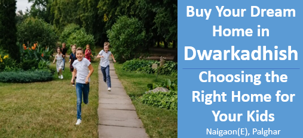

Buy Your Dream Home in Dwarkadhish:Choosing the Right Home for Your Kids
A kid-centric home is designed to prioritize a child's safety, comfort, and development in all aspects—physical, mental, and emotional. These homes feature child-friendly play areas, educational facilities, and community amenities that create an ideal environment for children to thrive. With urbanization increasing, the demand for such homes is growing, as parents seek spaces that balance safety with the challenges of limited space. Projects like DWARKADHISH recognize this need, offerin
Sport Area
A kid-friendly home should feature a well-planned sports area that encourages physical fitness through outdoor activities. By creating a clearly marked, multi-sport turf area, children can engage in basketball, tennis, soccer, or football, which will help improve their strength, agility, and coordination.This multi-use area will keep them engaged year-round, promoting both physical fitness and social interaction.
Kids Play Area
A home with children should have a safe, well-maintained play area that encourages physical activity and creativity. Equipped with swings, slides, and climbing structures, the space allows kids to express themselves physically while sparking their imagination. It also fosters social interaction, helping children build important skills like teamwork and communication through play. A well-designed play area promotes both exercise and fun, supporting healthy development in a nurturing environment.
Garden and playground
A green garden area in a child-centric home provides a peaceful space where kids can connect with nature and learn about different plants and their benefits. Through gardening activities, children develop a sense of responsibility towards the environment. Outdoor community gardens also offer opportunities for play, exploration, and learning, encouraging environmental awareness while fostering a deeper appreciation for nature. This outdoor setting nurtures curiosity, creativity, and a love for the natural world.
Safety Features
Childproofing also includes safety gates, window locks, and a secure perimeter to protect children from potential hazards and intruders. These precautions ensure a safe environment where kids can play and explore with peace of mind.
Distance to Educational Facilities
Living in a child-centric home goes beyond just amenities and recreation; proximity to good schools is a key factor. Being close to reputed schools and educational institutions saves time and energy on daily commutes, while ensuring the child has access to quality education. When selecting a school, it's important to consider its reputation, curriculum, extracurricular activities, and transport facilities to ensure it aligns with the child's needs and provides a well-rounded learning experience.
Distance to Healthcare Facilities
Children are more susceptible to illnesses and injuries, making proximity to healthcare facilities a crucial consideration when choosing a child-centric home. It's important to select a location, such as Dwarkadhish, that is close to reputable hospitals, pediatric clinics, and pharmacies that operate 24/7. This ensures quick access to medical care in case of emergencies, providing peace of mind for parents while keeping their children safe and healthy.
A child-centric home is not just about creating a fun and safe environment but also ensuring convenience, accessibility, and well-being for both the child and the family. Thoughtful planning of spaces for physical activity, creativity, and learning, combined with safety measures, proximity to quality schools, and easy access to healthcare facilities, plays a vital role in a child’s growth and development. Whether it’s a well-designed sports area, a nurturing garden, or a safe living space, the right home can provide children with the opportunity to thrive, explore, and build a strong foundation for their future.
Contact us
+91 72088 43484 / +91 72088 43487
kkcreateandbiuld@gmail.com
Radha Nilaya, Plot No. 164/2,
Bapane Village, Chandrapada Road,
Naigaon (E) - 401208,
Maharashtra, India.